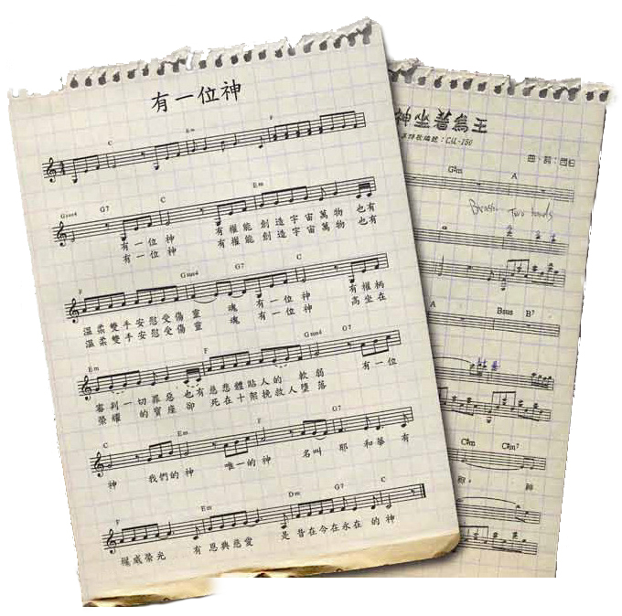

大部分現代流行歌基於現代的旋律︰很感性、很悲哀、很煽情。流行歌道出人的痛苦與心聲，而大多數人會被音樂本身去牽引，跟著這樣的情緒走。然而我們看看聖詩的歌詞，聖詩是讚美神，而不是用來煽情。聖詩道出人的盼望，一定不會絕望；因為在神裡有喜樂，我們不會悲哀。我留意到今天有很多人帶著煽情的心去讚美神，被音樂牽引，很注重感受，跌進自我的世界。但大家不要忘記我們現在是讚美上帝，我們的神是有權能，與煽情無關，結果大家都唱不出歌詞本身的意思。所以這次我用〈有一位神〉和〈神坐著為王〉作為例子，跟大家討論一下我們要如何演繹聖詩。
在〈有一位神〉聖詩中，第一、二、三節歌詞的首句︰「有一位神 有權能創造宇宙萬物」、「有一位神 有權柄審判一切罪惡」、「有一位神 高坐在榮耀的寶座」。一個創造宇宙萬物、審判罪惡和高坐榮耀寶座的神怎麼會是煽情？我常常在想︰如果兒子做錯事，做父母用煽情的態度去教導他，兒子會改變過來嗎？聖經箴言也教導我們要鞭策孩童。若用煽情的態度，有誰不喜歡呢？原來神的公義是那麼溫和，但人會不會因此而不犯罪？歷史告訴我們人類只會更加犯罪，因為神是那麼好。

我看到今天的危機是在於演繹錯誤的問題，大家只強調神的愛，將神的公義變得很溫和。魔鬼成功地將人文主義完完全全放在神的聖詩裡面，結果大家唱的時候都很陶醉。但我們唱聖詩是讚美神，而不是為自我陶醉﹗
若我們在國家主席胡錦濤面前唱國歌，當唱到「起來起來起來」的時候會用甚麼態度跟情緒去唱呢？我們唱國歌都不會如此，但我們對滿有威嚴的神卻跌進感性的世界自我陶醉，我認為這是不恰當的。
副歌︰
「有一位神 我們的神 唯一的神 名叫耶和華
有權威榮光 有恩典慈愛 是昔在今在永在的神」
我們應該大聲唱出來，因為這是神的名字。但大家都在陶醉音樂，忘記了我們要讚美神、要宣告神的聖名，唱出歌詞中的精神、喜樂、盼望。當我們唱到「昔在今在永在」的時候應該是很有力量，因為我們的神是很偉大，而且是永恆的，我們要在永恆中與祂相見，並且還要高舉祂的聖名。但大家都唱得很痛苦、沒有盼望。當我們從歌詞中發現完全不是這樣的，唱法應該是漸大的，因為漸細則給人一種沒有力量的感覺。
大家都被現代的旋律欺騙，而忘記了歌詞當中的喜樂、精神、盼望。試想想如果用現代煽情的旋律怎麼可能唱出盼望？現代的音樂都不是強調盼望、喜樂、精神，而是憂愁，憂愁又怎會有精神、喜樂、盼望？雖然現代的旋律是那麼悲傷，但我們可以用歌詞把旋律改變過來。
有三種唱聖詩時必須具備的元素︰精神、盼望、喜樂。
我自己親自去研讀詩篇，發覺詩人原來也很痛苦的︰他被人打、被人追殺，跟我們的生活沒甚麼分別，甚至有過之而無不及。他們也經歷過困難，他們沒有精神、沒有希望，覺得很痛苦。但當他尋找神的時候他就知道神是永不改變。他看見神如何拯救他，結果他改變過來，靠著耶和華歡樂，從而活出精神、盼望、喜樂的生命。詩人就用這種態度去讚美神。所以這三個元素是很重要的，這是世界沒辦法給予我們的。
我再舉一個例子︰〈神坐著為王〉
第一節的歌詞是這樣的︰
「神啊我要一心稱謝祢 神啊我要高舉祢聖名
我要因祢歡喜快樂 至高的主啊 祢榮耀使我心歌頌祢」
歌詞說到我們要歌頌神、高舉神，是很興奮、很火熱、很有力和很喜樂的。然而，其旋律是︰「so me me me fa me ra te do」是很煽情，比較軟弱、很悲哀，好像在說︰「神啊﹗救救我吧﹗」
然後到副歌是：
「就算翻起千般駭浪 主必會為我掌舵
每日隨時乘風破浪 樂道主的凱歌」
我不相信大家在痛苦當中可以很溫和，大家卻跟著旋律唱得如此軟弱，唱起來也不像在乘風破浪。所以我們應該是很有力量地唱出「就算翻起千般駭浪，主必會為我掌舵」，我們不能讓音樂主導我們，應該要用歌詞來分別為聖。歌詞告訴我們︰This is a Christian life, although the music doesn’t show it .這也很難怪的，因為外面的制片是這樣做，而弟兄姊妹也喜歡。這引出另一個問題是今天我們讚美神應該是「我喜歡」還是「神喜歡」？這個問題留待下一次才深入探討。